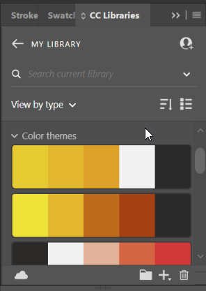
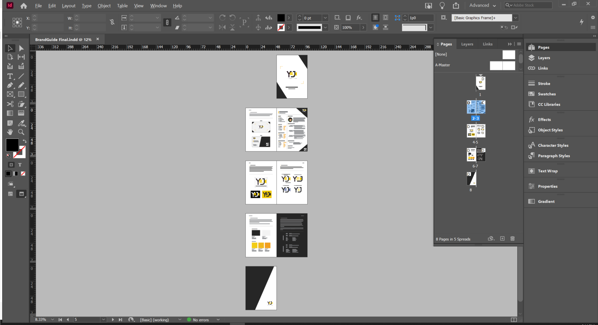
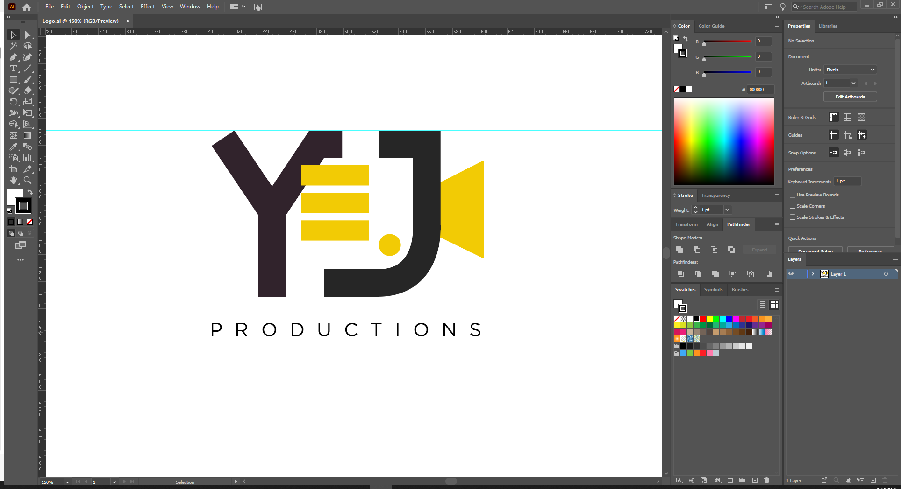
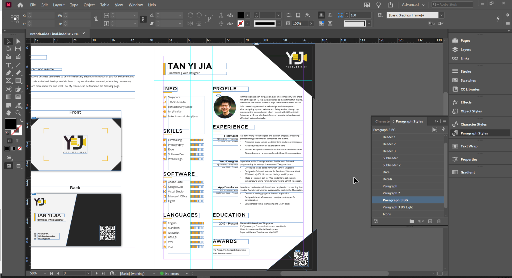
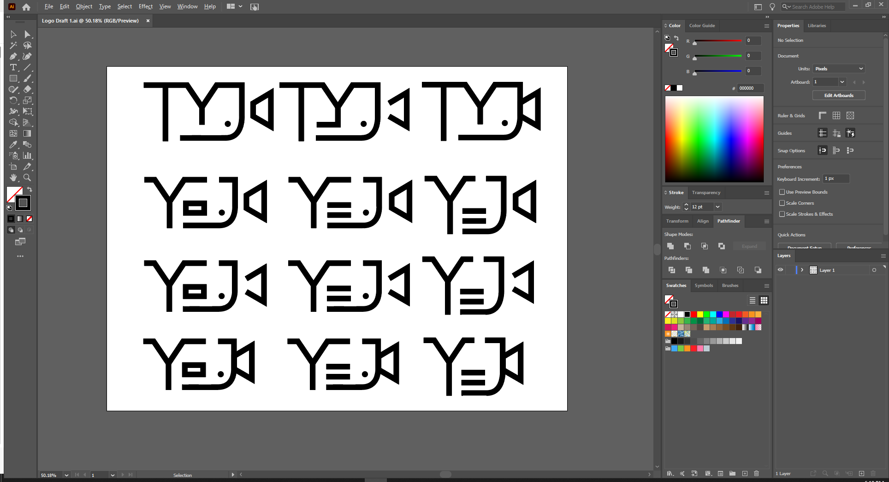
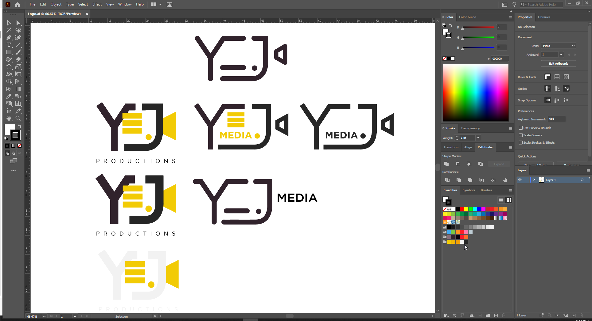

Introduction
I decided to make a personal brand since I've been doing freelance work as a filmmaker and web developer for a while now. This project gave me an excuse to use some study time to develop it further, also applying the skills I've learned! I'll keep this short and succinct.
You can navigate between the different sections using the tabs above or flip the pages of the brand guide directly. Click on a page to zoom in. Otherwise, you can access the brand guide PDF here:
Who Am I?
I kept my brand name - Yi Jia Productions - the same as my own name since I want my name to be synonymous with what I do. I specialise in filmmaking and web design, and I pride myself in the professional quality of every work I make. Each work contains a personal touch of my own creativity.
This is what I want my brand to convey.
Tools Used
I used the Adobe suite products taught in class - namely Adobe InDesign and Illustrator for my brand guide. I didn't use Photoshop since there was no heavy image editing necessary.
Throughout the process, I googled a lot to learn different functions to make my design process smoother. One useful function I'd learned about was the Swatches Tools, allowing me to easily access my colour palette in both applications. This also allowed me to play with different colour palettes initially so I could see which I liked best.
The swatches tool in InDesign.
Adobe InDesign
To compile the brand guide, I used Adobe Indesign. It's easy to work with multiple pages with different layouts on one document in InDesign. Since I wanted to design my brand guide like a booklet with a two-page spread, this was perfect.
My Adobe InDesign workspace.
I also made extensive use of the Paragraph styles for the different text styles in my brand guide - especially when designing my resume, which I will go more into later.
Adobe Illustrator
To design the logo, I used Adobe Illustrator to design the only asset which required detailed levels of vector manipulation - the logo.
My Adobe Illustrator workspace for my logo.
I'll go into more detail behind the logo design process in the logo section.
Business Card
My business card strives to hold a minimalistic and professional look, with bold monochrome colours for elegance with a touch of gold to represent my touch of creativity.
The focus lines on the front coupled with the triangles at the corners minimalistically recreate the feel of looking into a viewfinder while adding some small elements of interest to prevent the card from being too plain.
Meanwhile, the back holds the bare essential details such as my profession and contact info. As a filmmaker and web developer, most of my portfolio is found on my website. Therefore, I attached a QR code for potential clients to easily access my website.
A fellow student asked if the black and white were intentionally balanced - and to that I say yes! I wanted to keep the white space small on the left so the viewer's eyes are drawn to focus on the bright left area where my essential details are at first. The black prevents the card from looking too plain and adds a bold touch of elegance to the card, contrasted starkly by the white QR code which is the next thing my viewers should notice. If they notice the QR code before the details, that is fine too.
Resume
From my research, I noticed that many creative resumes used bars and the like to indicate their confidence and/or skill levels. I thought that was quite neat, so I included my own simple variant of it to indicate my confidence from a level of 1-10 bars filled. My layout was also inspired from my general perusing of these creative resumes online, which segment their paragraphed portions from the less-wordy portions as I did.
Once again, I added the black triangle corners to prevent the resume from being too plain and white. I also included a a QR code at the bottom right in case the employer would like to easily access my portfolio website to see my works.
Designing my resume in Adobe InDesign.
To create the resume in InDesign, I made use of the guides and margins to maintain my layout structure. To make the resume more pleasing to read, I made sure to have a fair amount of space at the margins (white space). Actually, if you look at the rest of my brand guide, I do the same as well. The margins on my resume are smaller because I want to squeeze a little more information.
Also, I used many paragraph styles (as seen in the image) to easily edit and create different types of text as well. This was used not only in the resume, throughout the brand guide.
Logo
For my logo, I wanted to try my hand at turning my initials into something that can resemble my brand. So to better visualise it, I first put my initials down on an artboard in Adobe Illustrator. Fom there, I realised that it could somewhat resemble the shape of a camcorder or film camera - so I went ahead to design my logo in that direction. I first came up with several drafts, some of which consisted my full initials "TYJ" while others consisting just my first name "YJ". To allow more room to play with my initials, I designed the wordmark with vector graphics instead of a typeface.
The first round of drafts I came up with for my logo.
Right off the bat, I knew I didn't want to use the TYJ logo. The indent of the Y in the middle of the camera looked strange. I also decided to include the dot to not only represent a recording symbol but also fill up the white space within. After picking my preferred drafts, I went ahead to design a second set.
The second round of drafts for my logo.
Originally, there were only 4 drafts - the ones in the middle and the one on the right. I tested whether rounded edges or sharp edges worked better, and ended up deciding on sharp edges to look more professional since I thought having all rounded edges (see top) made it look a little too cartoony - somewhat like a Comic Sans font. In case you didn't know, the "MEDIA" for the bottom draft was supposed to act as the camera lens haha. But that didn't work. Looked too long.
I ended up settling on the one with the middle for this iteration. I felt that the three lines denoting a hamburger icon (for web design) not only helped to represent me as a web developer but also effectively filled the empty space within the logo so that my initials can form the camera outline. By then, I'd decided on my colour scheme, so I added the gold to the insides to see how it looks.
With fresh eyes, I felt that the text wasn't standing out enough. What I noticed first when looking at the logo were the gold elements within and not my initials. I wanted it the other way around. As such, I decided to increase the weight of my initials, and - to reduce the clutter within the logo - shift the text under the logo instead. I also decided to change it from "MEDIA" to "PRODUCTIONS" since it would fill up more of the space below, and I felt it still encapsulates my role in media productions.
Finally, after some polishing, I ended up with this logo.
The final logo.
For this logo, the first thing one would notice is the thick bold black letters, followed by the gold elements within - as I intended. The hamburger icon is in front of my initials while the camera lens is either behind or attached to it - adding some level of depth to my logo to make it more interesting, and also to symbolise how I'm in the middle of these two skills.
I chose a lighter font weight for the "PRODUCTIONS" to establish some textual hierarchy with my logo as the main focus. Also, one's eyes would intentionally trace the shape of the J down to the "PRODUCTIONS", leading them to read "YJ Productions".
My friend pointed out that because of the gold, the dot, and the camera lens element, my camera looked a little like a duck. I didn't notice that, but decided to embrace it because my favourite Pokemon is the Psyduck hehe. So it fits my personality.
From the feedback, some were split between having the dot and removing it to make the logo more minimal. I tried this out, and found that in order to keep the wordmark from looking unusual I had to squeeze them together - making the camera look thinner. Furthermore, I quite liked the friendliness the dot conveyed since it creates a sort of yellow duck face.
Guidelines
I added some guidelines for the usage of my logo in different situations, such as on a black or yellow background since these can come in conflict with the colours in my logo. I also added some guidelines on how not to use my logo so it isn't... misused...
Colour Palette
Since I have moderate colour deficiency (Deuteranopia), it was challenging for me to pick a colour scheme haha. At the same time, this helped me make sure that the colour scheme I picked was suitable for other colour-deficient users. I suppose that's just me turning my weakness into a strength hehe.
As a filmmaker (and photographer), off the bat I wanted a monochromatic colour scheme to represent elegance and professionalism. There's something about filmmakers and photographers and monochromatic colour schemes, I learnt in my research online... Could it be because of light and darkness?
Anyway, to differentiate myself from other filmmakers and photographers, I wanted a shade of yellow or orange of sorts to represent my touch of creativity in the quality work that I do.
So after gathering much inspiration from online and testing several colour schemes, I settled on this one I found on Adobe Color. What I liked about it was that the primary monochrome shades weren't completely black or white (too black and white would make it too... starkly contrasted and plain, like how law is black and white), and there were multiple main shades of gold I could play with. When trying it out on my logo and business card, I liked it. So I decided to stick with this!
Though I only include 5 shades of colour on my brand guide, other shades of colours on the spectrum can be used as well. Shades of grey can be used between the two shades I've specified, and shades of gold not deviating too far from those I've specified can also be used. However, these 5 colours are enough for most collateral, my resume a clear example.
Typography
I decided on Gotham for the primary typeface. I've used Gotham for a while now and I like it - its thickness represents my boldness and professionality. Furthermore, the many font weights available would allow me to employ textual hierarchies.
Some feedback I received was that I could consider a secondary typeface for my brand. Originally, I thought I wouldn't need one - Gotham seemed to be doing fine. However, after working on my resume, I noticed that I could fit fewer words into the paragraphs due to gotham being a rather wide font. Furthermore, since the font was wider, I found it harder to read the paragraphs as well.
Hence, I decided on Open Sans for the secondary typeface, recommended by the designers of the Gotham typeface themselves as a matching font. It looks very similar, but is slightly thinner - making it better for body text. It also supports many font weights for textual hierarchy.
So in general, Gotham can be used for both headers and body copy, while Open Sans should mainly be used for body copy only. I still think Gotham's thickness represents my personality best, so it should be the dominant typeface.
Why the black page?
I decided on the black page on purpose, not only to make the brand guide more interesting but to also demonstrate how text should be used on a dark background! If you look closely, you'll notice the font weight is one step heavier than text on a white page. This is because I've learnt over time that white text on a dark background is harder to read than black text on a white background, hence making it just slightly thicker can help to increase the readability without readers even noticing. Did you notice before I told you? If you did, you have really sharp eyes haha.
The End.
I hope you enjoyed reading through my brand guide! I'm serious about the film production and web development, by the way. If you're interested, you can check out my works at tanyijia.online.
Anyway, thanks for reading through this! Have a great day ahead :)
"Anger is a potent spice. A pinch wakes you up. Too much dulls your senses."